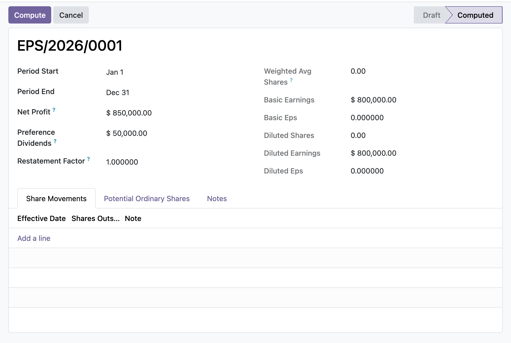

Compute basic and diluted earnings per share under IAS 33 from dated share movements and dilutive instruments, with anti-dilutive classes excluded and comparability inputs frozen once the run is disclosed.
The denominator is built from dated share movements on the eh.eps.share.movement model, each weighted by the days it was outstanding inside the period rather than taking a single period-end share count. A share issue mid-period contributes only its fraction of the year.
Potential ordinary shares are ordered by incremental EPS and added most-dilutive first, each included only while it keeps reducing EPS. Once an instrument turns anti-dilutive the sequence stops, so a naive add-everything approach that overstates dilution is avoided.
After a run reaches the computed state, earnings, period, restatement factor, share movements, and potential-share lines are blocked from edit, append, and delete on both the run and its children. To change a disclosed figure you set the run back to draft and recompute, leaving an audit trail.
A reporting accountant opens a new Earnings Per Share run for the year, enters net profit attributable to the parent and after-tax preference dividends, then records each dated share movement across the period so the weighted average number of ordinary shares is computed by day-fraction. On the Potential Ordinary Shares tab they add the option and convertible classes, supplying exercise and average market prices so the treasury-stock method nets out the assumed buy-back. An EH Accounting Manager clicks Compute: basic EPS, the diluted denominator, and diluted EPS are calculated with anti-dilutive classes dropped, the run is stamped computed, and every input is frozen so the disclosed figures cannot drift without a documented re-run.
In the shipped code today, each one a place where a cheaper module silently does the wrong thing.
When the weighted average number of shares is zero, basic EPS returns zero instead of dividing by zero, and the diluted computation short-circuits to the basic figures rather than raising.
Under the treasury-stock method the net increment is potential shares times one minus exercise over average market price, floored at zero, so options priced above the market add no dilutive shares.
A restatement factor scales both the weighted average and the diluted denominator, so a 2-for-1 split applied at 2.0 keeps EPS comparable across every period presented (IAS 33.64).
Freezing only the parent would leave an append hole, so create, write, and unlink are all guarded on share movements and potential-share lines; the sole exception is the run's own dilution test flipping is_dilutive under an internal compute context.
Because instruments are sorted by incremental EPS, once one fails the dilution test the loop breaks rather than testing the rest, since all remaining classes are at least as anti-dilutive.
odoo 19 earnings per share, IAS 33 EPS odoo, basic and diluted EPS, weighted average number of ordinary shares, dilutive potential ordinary shares, treasury stock method options, anti-dilutive exclusion, preference dividend deduction EPS, bonus issue share split restatement, EPS disclosure odoo community, convertible bond dilution, diluted earnings per share calculation

Earnings per share, basic and dilutedAn IAS 33 computation of basic earnings per share from profit less preference dividends over the weighted-average shares, adjusting for dilutive potential shares to give diluted EPS.
Premium ERP Heritage modules that extend the same stack, each built to the same engineering bar.
A reusable two way synchronisation engine that keeps Odoo in step with the people and payroll platform, idempoten...
The Australia country pack for the ERP Heritage Employment Hero integration
Sync certifications, qualifications and employee document metadata from the Employment Hero people platform into...
Sync Employment Hero leave categories, leave requests and leave balances into the standard Odoo Time Off app, wit...